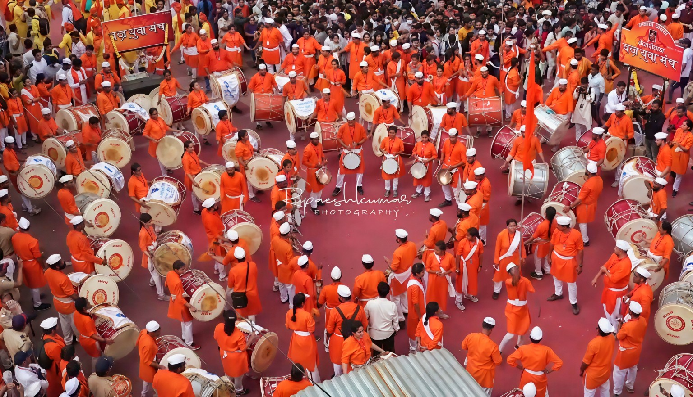
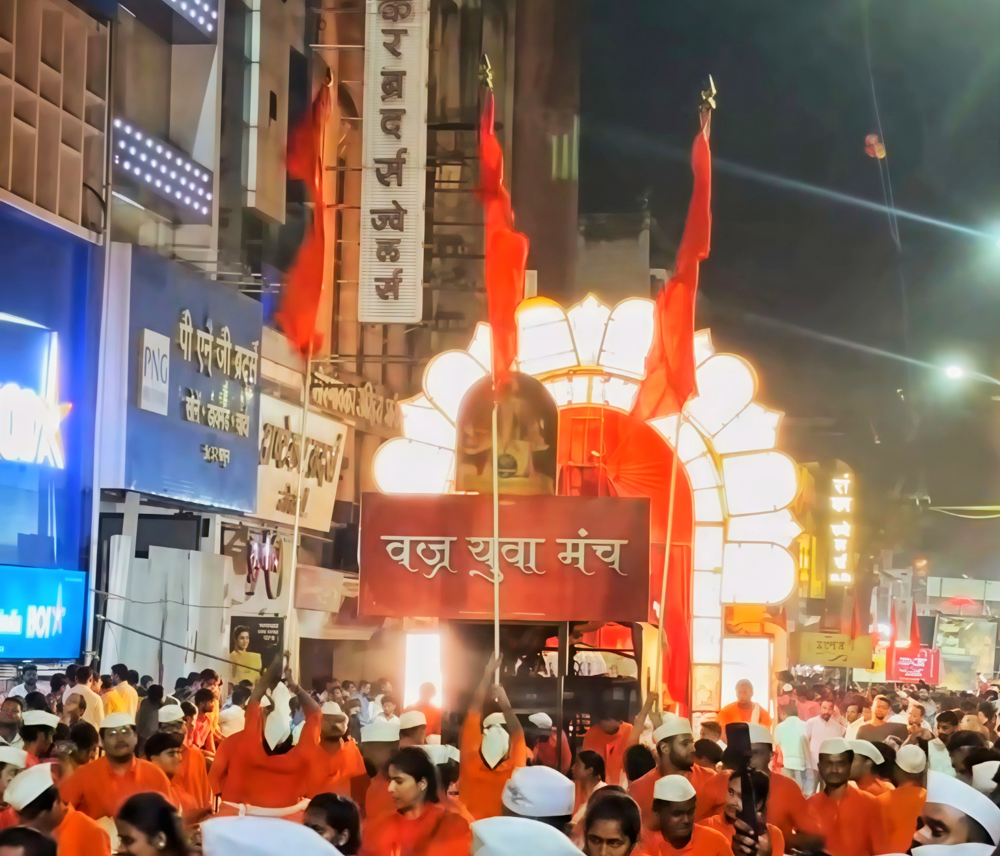

🥁
ढोल ताशा
महाराष्ट्राच्या पारंपरिक वाद्यांचा जोशपूर्ण गजर.

॥ श्री गणेशाय नमः ॥
२०१८ पासून पुण्याच्या ढोल-ताशा संस्कृतीचा जोश जपत
आमच्याबद्दल
२०१८ साली सुरू झालेल्या वज्र युवा मंच ढोल ताशा पथकाने पुण्याच्या सांस्कृतिक आणि उत्सवी परंपरेत आपली स्वतंत्र ओळख निर्माण केली आहे.
वज्र युवा मंच हे पुणे शहरातील एक नामांकित ढोल ताशा पथक असून, पारंपरिक ढोल-ताशाच्या माध्यमातून मराठी संस्कृती, शिस्त, संघभावना आणि उत्साह जपण्याचे कार्य करते. पुण्याच्या प्रतिष्ठित लक्ष्मी रोडसह शहरातील विविध भागांमध्ये पथकाने आपल्या दमदार सादरीकरणातून रसिकांची मने जिंकली आहेत.
पथकाला पुण्यातील मानाच्या आणि प्रतिष्ठित गणपती मंडळांसमोर सादरीकरण करण्याचा मान लाभला आहे. यामध्ये मानाचा पहिला श्री कसबा गणपती आणि मानाचा पाचवा श्री केसरीवाडा गणपती यांसारख्या पुण्याच्या मानाच्या गणपतींचा समावेश आहे.
ढोल-ताशाचा निनाद, भगव्या उत्साहाची ऊर्जा आणि एकजुटीची ताकद यांचा संगम म्हणजे वज्र युवा मंच.

आमची वैशिष्ट्ये
महाराष्ट्राच्या पारंपरिक वाद्यांचा जोशपूर्ण गजर.
तालासोबत शिस्त, संघभावना आणि मैत्री.
मराठी संस्कृतीचा वारसा नव्या पिढीपर्यंत पोहोचवणे.
प्रत्येक सादरीकरणात उत्साह आणि जल्लोष.
कार्यक्रम
शिस्तबद्ध पथक, पारंपरिक वेशभूषा आणि उत्साहाने भरलेला ताल.
प्रकाश, भगवे ध्वज आणि ढोल-ताशाच्या गजरात अविस्मरणीय वातावरण.
गॅलरी
व्हिडिओ
संपर्क साधा
कार्यक्रम, मिरवणूक किंवा पथकासंबंधी अधिक माहितीसाठी आमच्याशी संपर्क साधा.
पत्ता
शिंदे हाय स्कूल ग्राऊंड, पुणे
फोन
+91 9673034628
ई-मेल
vajrayuvamanch@gmail.com